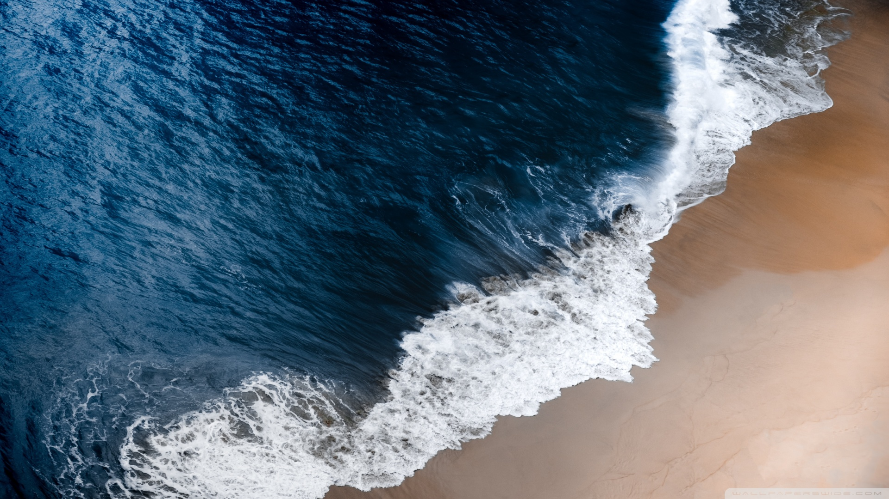

- 
-

-

Province: North Sumatra, island of Samosir

Province: East Nusa Tenggara, West Manggarai
Province: Central Java, Magelang
Province: West Nusa Tenggara, Central Lombok
Having stopover in myriad places in Indonesia is what makes this country a wonderful place to visit. The beauty of scenic natural landscapes blended with various unique culture of its people. Enjoy the untouched beaches, mountains, lakes, and many more pleasing destinations as well as the magnificent city skylines throughout the country. And when you decide to see them all, a visit won’t be enough to embrace the wonders of Indonesia.

Province: North Sulawesi, North Minahasa
Province: West Nusa Tenggara, Gili Islands
Province: Southeast Sulawesi, Wangi-Wangi

Province: Bangka Belitung Islands, East Belitung
Birding activities overlap the wildlife viewing locations. Highlights include easy sightings of resident and waterbirds.
The highest peaks on the six mountains that form the high Rwenzori can all be climbed. The most popular being the Margherita
Fly Fishing for rainbow trout is possible on the Sipi River between the park boundary and the highest on the tree waterfalls at Sipi

Take a guided tour of a cofee garden at Sipi to see how the beans are grown on the ground.